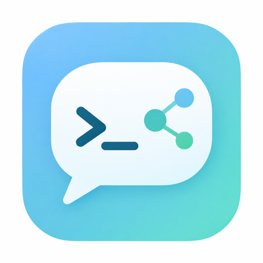

移动网络运维工具箱，装进口袋
SSH 终端 · RDP 远程桌面 · 网络诊断 · 局域网工具 · iperf3 测速
1.0.0 · ~76MB · 正式签名 · 装过 debug 版需先卸载
从远程会话到现场排障，一个 App 完成
密码、SSH Key、Keyboard Interactive 三种认证。支持导入 OpenSSH config、MobaXterm、Xshell 的连接，「保存并连接」一步进入会话。
FreeRDP 原生内核，横屏沉浸式显示。首次连接进行证书确认：取消连接、仅本次信任，或信任并保存。
可拖动换位置、捏合调大小、靠边自动吸附。内置左右键区，屏幕上直接显示箭头光标。
半透明浮在桌面上，不遮挡输入位置，可自由移动。带 Ctrl / Alt / Win 修饰键（点按一次生效、双击锁定）与符号层。
同网段设备互相发现，文件与文本点对点传输，不经过任何服务器。
Ping、DNS、IP 查询、Whois、HTTP 检测、Traceroute、TCP、TCP Ping、SSL/TLS、解锁检测，发现页一站集齐。
局域网扫描、端口扫描、本机 IP、mDNS、Wake on LAN、MAC 查询（OUI 厂商）、子网计算。
兼容 iperf3 的带宽测速，支持上行与下行方向。
WebDAV 加密备份；数据导入 / 导出，支持导入 OpenSSH config、MobaXterm、Xshell。连接与凭证保存在设备本地。
手机上运维，也可以很从容
编辑连接时可直接输入密码，保存时询问是否存为凭证；「保存并连接」一步进入会话。凭据管理的私钥只进不出：不提供明文导出，可以导出公钥。
首次连接远程桌面时进行证书确认：可以取消连接、仅本次信任，或信任并保存，下次不再打扰。
悬浮触摸板给出箭头光标与左右键，悬浮透明键盘带上 Ctrl / Alt / Win 修饰键——横屏沉浸式的远程桌面，在手机上也能精准操作。
你的网络，你的数据
真实界面，Android 与 iOS
简体中文与 English，全界面本地化